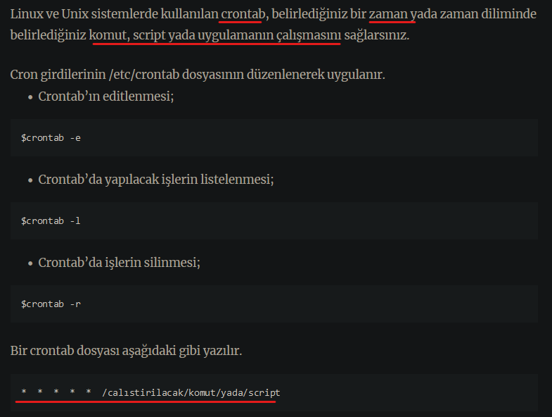
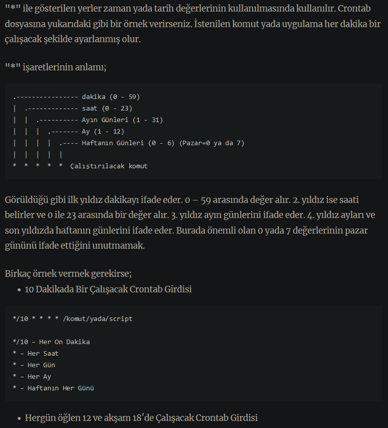
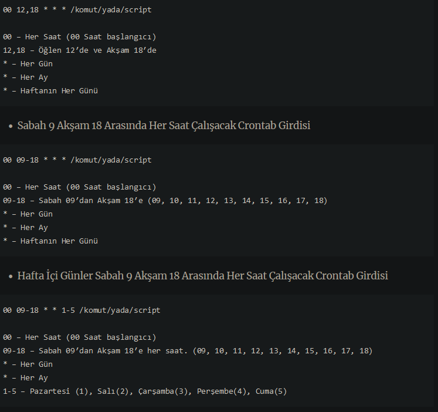
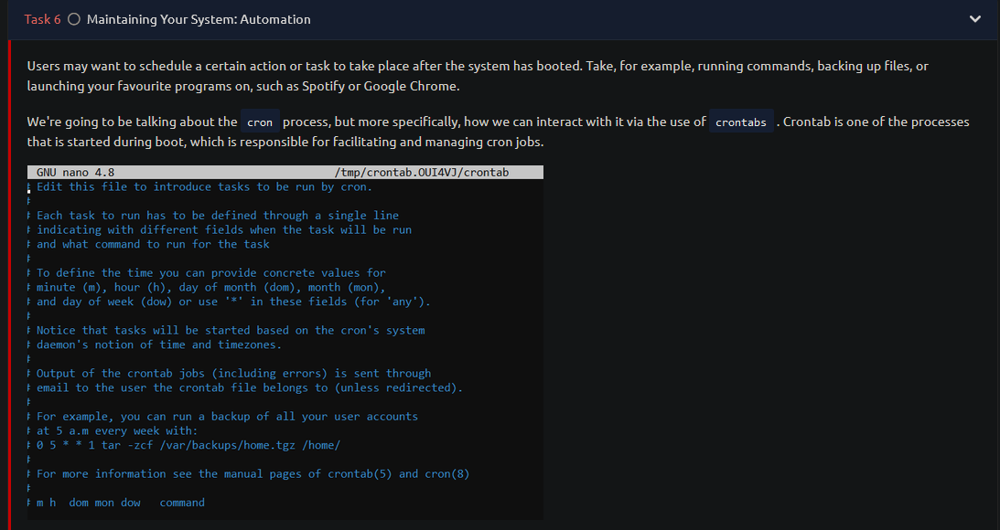
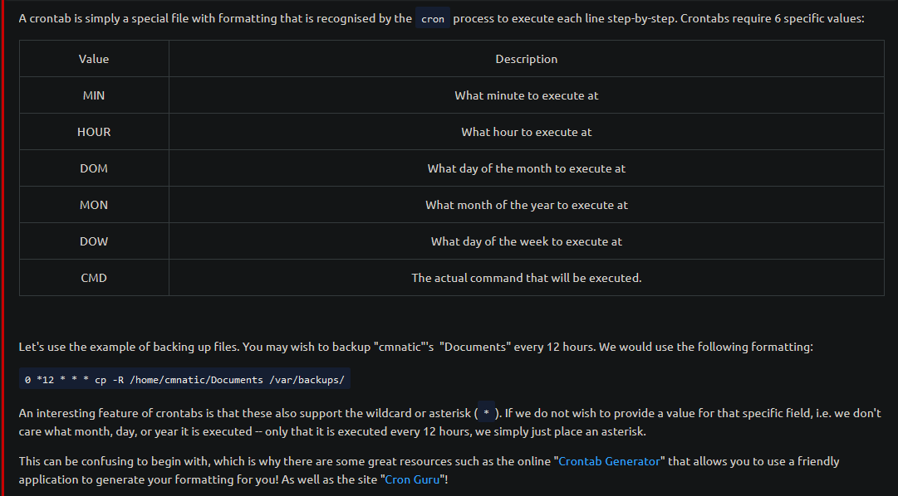
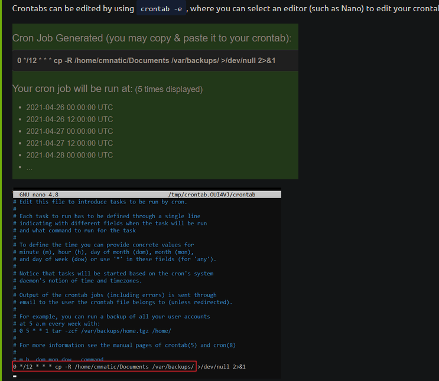

cron/crontab kaynak:
https://www.gokhanmankara.com/2010/06/crontab-kullanimi-ve-ornek-crontab-uygulamasi/ Linux ve Unix sistemlerde kullanılan crontab, belirlediğiniz bir zaman yada zaman diliminde belirlediğiniz komut, script yada uygulamanın çalışmasını sağlarsınız.



#tekrar et -1 kaynak:
https://tryhackme.com/room/linuxfundamentalspart3 

